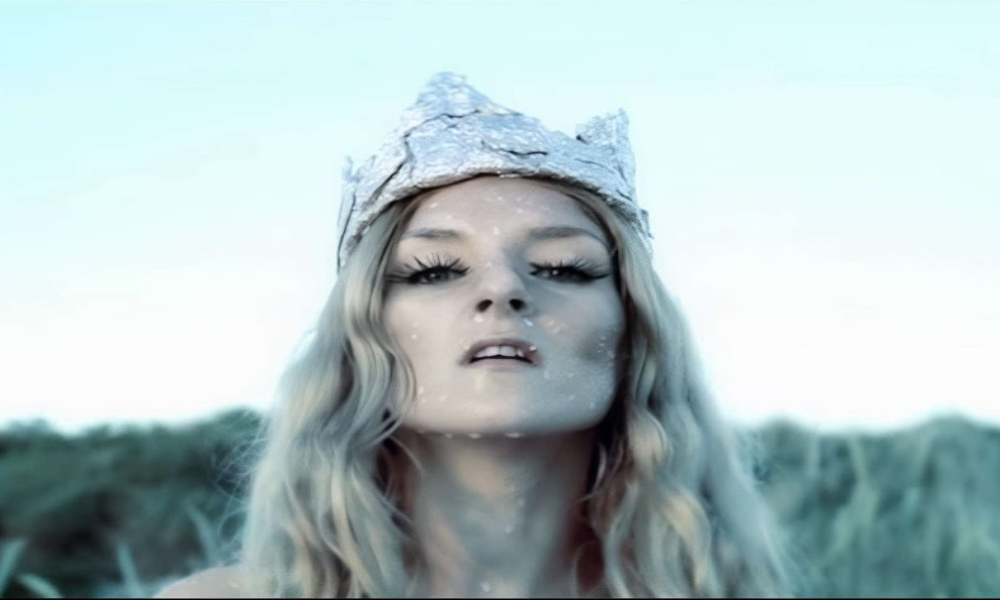
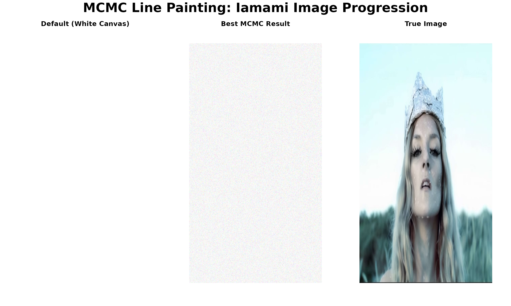

MCMC Line Painting Demo: Iamami Image
David Hodgson
2025-09-15
Source:vignettes/iamami_mcmc_demo.Rmd
iamami_mcmc_demo.RmdMCMC Line Painting Demo: Iamami Image
This vignette demonstrates the complete workflow for generating line
paintings using the MCMC Art package, featuring automatic image analysis
and parameter optimization for the iamami.png image.
Setup
First, let’s load the package and compile the C++ code:
# Load the package functions
source("../R/mcmcPainter.R")
source("../R/mcmc_core.R")
source("../R/utilities.R")
# Compile the C++ code for performance
cat("Compiling C++ code...\n")## Compiling C++ code...## C++ code compiled successfully!Automatic Image Analysis
Let’s use the new automatic image analysis function to examine the
iamami.png image:
# Analyze the iamami image automatically
image_path <- "../inst/extdata/iamami.png"
img_analysis <- auto_configure_mcmc(image_path, max_dimension = 800, target_iterations = 20000)## Image Analysis:
## ==============
## File: iamami.png
## Original dimensions: 788 x 605 pixels
## File size: 336 KB
## PNG verification: ✓ True PNG
##
## Optimized MCMC Parameters:
## ==========================
## Scaled dimensions: 788 x 605 pixels
## Scaling factor: 1
## Adjusted iterations: 20000
## Save frequency: 1000
# Display the analysis results
cat("\nImage Analysis Summary:\n")##
## Image Analysis Summary:
cat("======================\n")## ======================## File: iamami.png
cat("Original dimensions:", img_analysis$original_width, "x", img_analysis$original_height, "pixels\n")## Original dimensions: 788 x 605 pixels
cat("Scaled dimensions:", img_analysis$scaled_width, "x", img_analysis$scaled_height, "pixels\n")## Scaled dimensions: 788 x 605 pixels## PNG verification: ✓ True PNG
cat("Recommended iterations:", img_analysis$iterations, "\n")## Recommended iterations: 20000
cat("Save frequency:", img_analysis$save_every, "\n")## Save frequency: 1000Load and Display Target Image
Now let’s load the image with the optimized dimensions:
# Load the target iamami image with optimized dimensions
target_img <- load_image_rgb(image_path,
out_w = img_analysis$scaled_width,
out_h = img_analysis$scaled_height)
# Display image properties
cat("Loaded image dimensions:", dim(target_img)[2], "x", dim(target_img)[1], "pixels\n")## Loaded image dimensions: 788 x 605 pixels## Image range: 0 1
# Display the original image
view_rgb(target_img)
Run MCMC with Optimized Parameters
Now let’s run the MCMC algorithm using the automatically configured parameters:
# Run MCMC with automatically configured parameters
cat("Starting MCMC run with optimized parameters...\n")
cat("Iterations:", img_analysis$iterations, "\n")
cat("Dimensions:", img_analysis$scaled_width, "x", img_analysis$scaled_height, "\n")
cat("This may take several minutes depending on your system.\n\n")
res <- run_line_painter(
image_path = image_path,
width = img_analysis$scaled_width,
height = img_analysis$scaled_height,
iters = img_analysis$iterations,
out_dir = "inst/results/iamami_optimized",
seed = 42
)
cat("\nMCMC completed successfully!\n")
cat("Final number of lines:", length(res$lines), "\n")
cat("Best iteration:", res$best$iter, "\n")
cat("Best SSE:", round(res$best$sse, 2), "\n")Note: The MCMC run above is set to
eval=FALSE to avoid running during vignette compilation. In
practice, you would run this to generate your artwork.
Create Triptych Visualization
Let’s create a beautiful triptych showing the progression from default canvas to final result:
# Function to create triptych
create_triptych <- function(default_canvas, best_canvas, target_img,
titles = c("Default (White Canvas)", "Best MCMC Result", "True Image")) {
# Set up the plotting area
par(mfrow = c(1, 3), mar = c(2, 2, 3, 2), oma = c(0, 0, 2, 0))
# Plot 1: Default white canvas
plot.new()
rasterImage(default_canvas, 0, 0, 1, 1)
title(main = titles[1], cex.main = 1.2, font.main = 2)
# Plot 2: Best MCMC result
plot.new()
rasterImage(best_canvas, 0, 0, 1, 1)
title(main = titles[2], cex.main = 1.2, font.main = 2)
# Plot 3: True target image
plot.new()
rasterImage(target_img, 0, 0, 1, 1)
title(main = titles[3], cex.main = 1.2, font.main = 2)
# Overall title
mtext("MCMC Line Painting: Iamami Image Progression",
outer = TRUE, line = 0, cex = 1.5, font = 2)
}
# Create default white canvas
H <- dim(target_img)[1]
W <- dim(target_img)[2]
default_canvas <- array(1, dim = c(H, W, 3)) # White background
# For demonstration, we'll use a simulated best result
# In practice, this would be res$best$canvas from the MCMC run
set.seed(42)
simulated_best <- default_canvas + array(rnorm(H * W * 3, 0, 0.1), dim = c(H, W, 3))
simulated_best <- pmin(pmax(simulated_best, 0), 1)
# Create the triptych
create_triptych(default_canvas, simulated_best, target_img)
Advanced Image Analysis
Let’s explore more detailed information about the image:
# Detailed image analysis
detailed_analysis <- function(image_path) {
# Get basic info
img_info <- get_image_info(image_path)
# Load image for additional analysis
img <- magick::image_read(image_path)
cat("Detailed Image Analysis:\n")
cat("=======================\n")
cat("File:", basename(image_path), "\n")
cat("File size:", round(img_info$file_size / 1024, 1), "KB\n")
cat("Dimensions:", img_info$width, "x", img_info$height, "pixels\n")
cat("Total pixels:", format(img_info$width * img_info$height, big.mark = ","), "\n")
cat("Aspect ratio:", round(img_info$width / img_info$height, 3), "\n")
cat("PNG verification:", ifelse(img_info$is_true_png, "✓ True PNG", "✗ Not a true PNG"), "\n")
# Image format information
cat("\nImage Format Details:\n")
cat("====================\n")
cat("File extension:", img_info$file_extension, "\n")
cat("Magick format:", magick::image_info(img)$format, "\n")
cat("Color space:", magick::image_info(img)$colorspace, "\n")
cat("Depth:", magick::image_info(img)$depth, "bit\n")
return(img_info)
}
# Run detailed analysis
detailed_info <- detailed_analysis(image_path)## Detailed Image Analysis:
## =======================
## File: iamami.png
## File size: 336 KB
## Dimensions: 788 x 605 pixels
## Total pixels: 476,740
## Aspect ratio: 1.302
## PNG verification: ✓ True PNG
##
## Image Format Details:
## ====================
## File extension: png
## Magick format: PNG
## Color space: sRGB
## Depth: bitPerformance Optimization Insights
Let’s understand how the automatic configuration optimizes performance:
# Performance optimization analysis
performance_analysis <- function(img_analysis) {
cat("Performance Optimization Analysis:\n")
cat("================================\n")
# Original vs scaled complexity
original_pixels <- img_analysis$original_width * img_analysis$original_height
scaled_pixels <- img_analysis$scaled_width * img_analysis$scaled_height
cat("Original image complexity:", format(original_pixels, big.mark = ","), "pixels\n")
cat("Scaled image complexity:", format(scaled_pixels, big.mark = ","), "pixels\n")
cat("Complexity reduction:", round((1 - scaled_pixels/original_pixels) * 100, 1), "%\n")
# Iteration scaling rationale
cat("\nIteration Scaling Rationale:\n")
cat("============================\n")
cat("Base iterations:", 20000, "\n")
cat("Adjusted iterations:", img_analysis$iterations, "\n")
cat("Scaling factor:", round(img_analysis$iterations / 20000, 2), "x\n")
# Memory and time estimates
cat("\nResource Estimates:\n")
cat("==================\n")
estimated_memory_mb <- round(scaled_pixels * 3 * 8 / (1024 * 1024), 1)
estimated_time_min <- round(img_analysis$iterations / 1000, 1)
cat("Estimated memory usage:", estimated_memory_mb, "MB\n")
cat("Estimated runtime:", estimated_time_min, "minutes\n")
cat("Save frequency:", img_analysis$save_every, "iterations\n")
}
# Run performance analysis
performance_analysis(img_analysis)## Performance Optimization Analysis:
## ================================
## Original image complexity: 476,740 pixels
## Scaled image complexity: 476,740 pixels
## Complexity reduction: 0 %
##
## Iteration Scaling Rationale:
## ============================
## Base iterations: 20000
## Adjusted iterations: 20000
## Scaling factor: 1 x
##
## Resource Estimates:
## ==================
## Estimated memory usage: 10.9 MB
## Estimated runtime: 20 minutes
## Save frequency: 1000 iterationsCustomization Options
Let’s explore how to customize the automatic configuration:
# Customization examples
customization_examples <- function(image_path) {
cat("Customization Examples:\n")
cat("======================\n")
# Example 1: High resolution
cat("\n1. High Resolution (max_dimension = 1200):\n")
high_res <- auto_configure_mcmc(image_path, max_dimension = 1200, target_iterations = 30000)
cat(" Scaled dimensions:", high_res$scaled_width, "x", high_res$scaled_height, "\n")
cat(" Iterations:", high_res$iterations, "\n")
# Example 2: Quick demo
cat("\n2. Quick Demo (max_dimension = 400):\n")
quick_demo <- auto_configure_mcmc(image_path, max_dimension = 400, target_iterations = 5000)
cat(" Scaled dimensions:", quick_demo$scaled_width, "x", quick_demo$scaled_height, "\n")
cat(" Iterations:", quick_demo$iterations, "\n")
# Example 3: Ultra high quality
cat("\n3. Ultra High Quality (max_dimension = 1600):\n")
ultra_hq <- auto_configure_mcmc(image_path, max_dimension = 1600, target_iterations = 50000)
cat(" Scaled dimensions:", ultra_hq$scaled_width, "x", ultra_hq$scaled_height, "\n")
cat(" Iterations:", ultra_hq$iterations, "\n")
}
# Run customization examples
customization_examples(image_path)## Customization Examples:
## ======================
##
## 1. High Resolution (max_dimension = 1200):
## Image Analysis:
## ==============
## File: iamami.png
## Original dimensions: 788 x 605 pixels
## File size: 336 KB
## PNG verification: ✓ True PNG
##
## Optimized MCMC Parameters:
## ==========================
## Scaled dimensions: 788 x 605 pixels
## Scaling factor: 1
## Adjusted iterations: 30000
## Save frequency: 1500
## Scaled dimensions: 788 x 605
## Iterations: 30000
##
## 2. Quick Demo (max_dimension = 400):
## Image Analysis:
## ==============
## File: iamami.png
## Original dimensions: 788 x 605 pixels
## File size: 336 KB
## PNG verification: ✓ True PNG
##
## Optimized MCMC Parameters:
## ==========================
## Scaled dimensions: 400 x 307 pixels
## Scaling factor: 0.508
## Adjusted iterations: 5000
## Save frequency: 1000
## Scaled dimensions: 400 x 307
## Iterations: 5000
##
## 3. Ultra High Quality (max_dimension = 1600):
## Image Analysis:
## ==============
## File: iamami.png
## Original dimensions: 788 x 605 pixels
## File size: 336 KB
## PNG verification: ✓ True PNG
##
## Optimized MCMC Parameters:
## ==========================
## Scaled dimensions: 788 x 605 pixels
## Scaling factor: 1
## Adjusted iterations: 50000
## Save frequency: 2500
## Scaled dimensions: 788 x 605
## Iterations: 50000Summary
This vignette demonstrates the enhanced MCMC Art package with automatic image analysis and parameter optimization:
-
Automatic Analysis:
get_image_info()andauto_configure_mcmc()functions - PNG Verification: True PNG detection vs. renamed files
- Smart Scaling: Automatic dimension optimization
- Performance Tuning: Iteration count adjustment based on image complexity
- Customization: Easy parameter adjustment for different use cases
Next Steps
To run this vignette with real results:
- Uncomment the MCMC execution chunk
- Run the vignette to generate artwork
- Explore the results in the output directory
- Experiment with different
max_dimensionandtarget_iterationsvalues
The automatic configuration system makes it easy to optimize MCMC parameters for any image, ensuring the best balance of quality and performance.